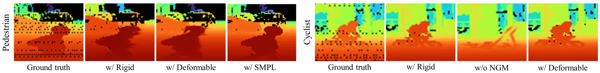
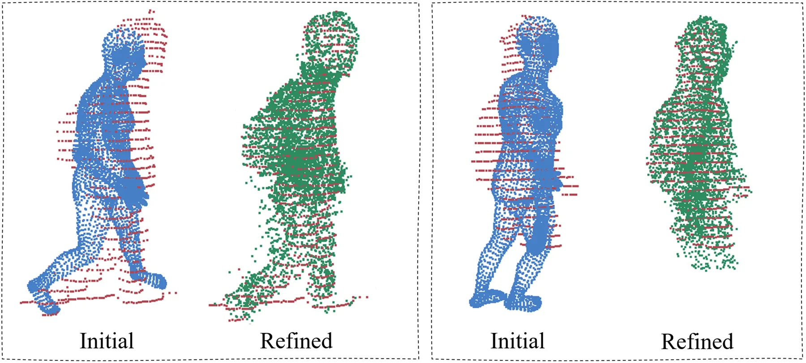
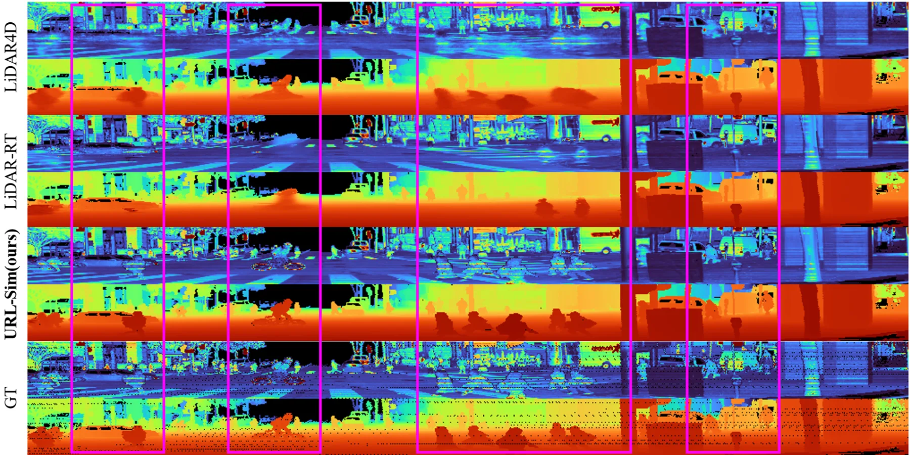
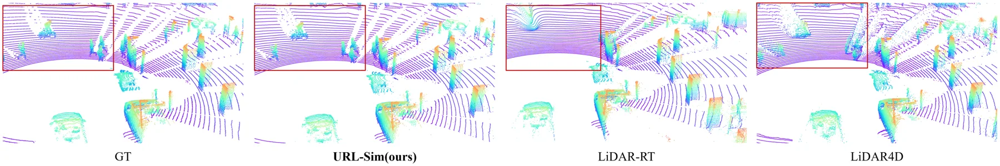
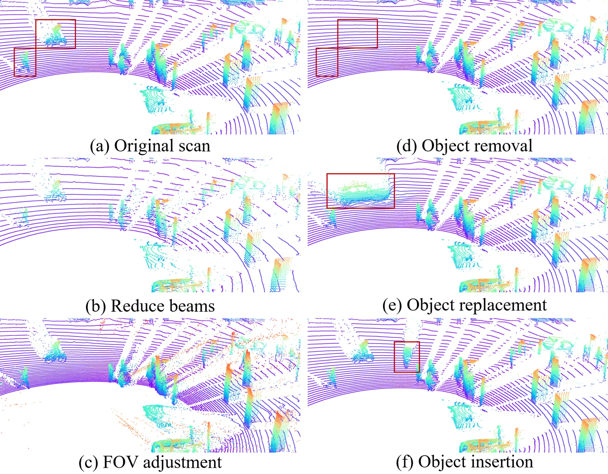

URL-Sim：把行人、骑行者与车辆统一进 LiDAR 高斯的动态驾驶场景仿真
URL-Sim: Unified and Regulated LiDAR Simulation for High-Fidelity Reconstruction of Dynamic Driving Scenes
结论是“非刚性建模 + 有界预算”能在不增加基元数量的前提下同时改善几何与外观：Waymo Chamfer 0.0468 对 LiDAR-RT 的 0.0863（−45.7%），F-score@5cm 0.9682 对 0.9461；KITTI-360 Chamfer 0.0909 对 0.1367（−33.5%）。代价是渲染帧率略降（17.6 vs 20.1 FPS）。
Chamfer vs LiDAR-RT (Waymo)
Chamfer vs LiDAR-RT (KITTI-360)
Gaussian budget
FPS on KITTI-360
作者、单位与技术谱系 · Research context
作者与单位
研究脉络
- LiDAR-RT（CVPR 2025）方法基座关系：URL-Sim 直接沿用其可微 LiDAR 光线追踪渲染管线与丢线概率参数化[论文 §III-A]
- Taming 3DGS（SIGGRAPH Asia 2024）方法上游关系：固定预算与二次增长曲线的调度思想被直接用作 RGD 的预算函数[论文 §III-B 式 (6)]
- OmniRe（ICLR 2025）方法上游关系：行人的初始 SMPL 运动参数取自图像域观测的做法沿用自 OmniRe[论文 §III-A]
- URL-Sim 本篇推进本篇推进关系：把 SMPL 关节驱动、无模板形变网络与受控致密化合并进同一个 LiDAR 高斯场景图[论文 §IV-B 表 I]
合作网络
- 重庆大学机械与运载工程学院重庆大学机械与运载工程学院 → Kefei Qian、Xipeng Feng、Jie Li、Long Cao、Yuhan Chen、Xiangfei Huang、Guofa Li关系：共同署名（同一单位）[arXiv 摘要页]
- URL-Sim ↔ LiDAR-RTURL-Sim → LiDAR-RT（CVPR 2025，Zhou 等）关系：技术依赖（渲染后端与 ray-drop 参数化）[论文 §III-A 与图 1]
- URL-Sim ↔ 2D Gaussian SplattingURL-Sim → 2DGS（Huang 等，SIGGRAPH 2024）关系：技术依赖（基元表示与 distortion 正则）[论文 §III-A/§III-C]
作者单位、通讯作者、基金号与引用关系均来自论文首页和正文；技术依赖按“正文明确写出的公式/模块来源”记录。未发现作者与 LiDAR-RT、OmniRe、Taming 3DGS 团队之间的公开共同署名或合作项目，因此不写师承或合作关系。
方法本质拆解 · What actually changed
是不是微调？
不是微调，是从头优化一套场景。静态背景、每个动态实例的高斯参数、SMPL 位姿/形状、形变网络与蒙皮残差全部在 30k 迭代内联合训练，没有加载任何预训练高斯或扩散先验；行人的初始姿态来自图像域估计，再在 LiDAR 监督下联合精修。
有没有额外约束？
有三类硬约束：总基元数被钳在 3M，并按 Q(x) 的二次曲线分轮分配；动态实例被限制在各自规范空间并用刚体变换或 LBS/形变场映射到世界系；损失里除深度/强度 L1 与 SSIM 外，还加了 median depth 损失、2DGS distortion 损失、ray-drop BCE、点云 Chamfer 以及出框/平滑/邻域正则。
推理/后端到底做了什么？
推理没有全局 BA 或因子图：给定位姿与场景图后，沿 LiDAR 光束做可微光线追踪光栅化，得到深度、强度与丢线概率，再由训练好的 U-Net 依据渲染概率/深度/强度三通道精修 ray-drop 掩码。编辑与重仿真通过改变光束数、垂直 FOV 或实例位姿直接重渲染，不需要重新优化。
方法本质是什么？
本质是把“点云稀疏且角度非均匀”这一 LiDAR 特性写进高斯的放置规则：用深度平滑度和强度梯度找出结构边界，用光线贡献衡量每个基元实际被看到的程度，再在固定预算内把基元搬到这些位置；动态部分则用参数化人体/形变先验把稀疏观测补成可动几何。它没有做的是跨场景泛化和生成式外推。
输入是带包围盒的多帧 LiDAR 点云 + 可微光线追踪渲染器；改变的位置是高斯的数量分配与动态实例的参数化（刚性/SMPL/形变场）；约束动作是 3M 预算下的二次增长调度与多维重要性重采样；直接效果是同等基元数下Chamfer 与 F-score 同时改善。

结论与问题Conclusion & Motivation
核心结论
URL-Sim 的核心主张是：在 LiDAR 仿真里，限制高斯数量与提升保真度并不矛盾，前提是把预算按“几何不连续 + 强度边缘 + 光线贡献”重新分配。它把车辆、行人、骑行者分别用刚性变换、SMPL 关节驱动和轻量形变网络表示，在同一 3M 基元上限下同时改善 2D 深度/强度与 3D 点云精度。Waymo 上 Chamfer 距离从最强基线 LiDAR-RT 的 0.0863 m 降到 0.0468 m（−45.7%），KITTI-360 从 0.1367 m 降到 0.0909 m（−33.5%）。
动机与问题
NeRF 类 LiDAR 仿真精度好但体渲染密集采样太慢（表 IV 中 DyNFL 与 LiDAR4D 只有 0.2 FPS），3DGS 类方法把速度拉到十几到二十几 FPS，却基本只处理刚性车辆。行人、骑行者这类弱势道路参与者恰恰是高风险边缘案例的主体，用刚性变换去拟合关节运动会出现严重几何拖影。另一方面，原始 3DGS 的 Adaptive Density Control 在稀疏、角度分布极不均匀的 LiDAR 点云上会无约束膨胀，直接撑爆显存；而粗暴设定硬上限又会让致密化过早饱和、精度回退。
方法Method
方法总览
整体是一条“解析 → 场景图 → 可微渲染 → 受控致密化 → 后处理”的流水线：原始点云与目标包围盒先被解析成动态高斯场景图，静态背景用跨帧聚合与体素下采样初始化，动态实例各自在物体中心规范空间里维护一套基元并在时间戳上变换到世界系。渲染侧沿用 LiDAR-RT 的可微光线追踪，输出深度图、强度图与 ray-drop 概率，训练后再用一个小 U-Net 以 BCE 监督精修 ray-drop 掩码。
关键技术细节
基元用 2DGS 表示，参数为 {μ, S, R, o, ζ, β}，其中 ζ 是强度、β 是由 β_drop/β_hit 两个 logit 经 Softmax 得到的丢线概率，并用球谐系数建模这两者的方向依赖。行人高斯绑定在 SMPL 模板网格上，世界位置由全局位姿 H_j(t) 与 LBS 蒙皮共同决定，蒙皮权重再经 voxel deformer 学一个残差以补偿模板先验与实测的偏差；骑行者等无模板目标则用共享参数、带实例嵌入 z_k 的形变网络直接回归位置/旋转/尺度增量。RGD 用 Q(x)=B−(B−S)(1−x/N)² 把总量从初始值 S 平滑推到预算 B，再以“帧误差 × (属性重要性 + 光线贡献)”的分数做加权随机重采样，属性重要性来自位置梯度、不透明度与尺度，光线贡献来自渲染权重、距离累积、光线相交频次与边缘图响应。

实验Experiments
实验设置
数据为 Waymo Open Dataset（64 线、20° 垂直 FOV、原生 64×2560 深度/强度图）与 KITTI-360（64 线、26.4° FOV，球面投影到 64×1030），各选 4 段含非刚性动态实例的序列，每段 50 帧，每 10 帧取 1 帧作测试。指标分两组：2D 用深度/强度的 RMSE、MedAE、SSIM、PSNR、LPIPS，3D 用 Chamfer 距离与 5 cm 阈值 F-score，效率用 FPS 与基元数。对照为 LiDAR-NeRF、DyNFL、LiDAR4D、LiDAR-GS、GS-LiDAR、LiDAR-RT，全部用官方开源实现并在统一指标下评测。训练在单张 RTX 5070 Ti 上跑 30,000 次迭代，所有 3DGS 类方法都限到约 3M 高斯。
实验数字与比较
Waymo 上深度 RMSE 5.9844（LiDAR-RT 6.3597）、强度 PSNR 26.5183 dB（LiDAR-RT 25.0785）、Chamfer 0.0468（LiDAR-RT 0.0863）、F-score 0.9682（LiDAR-RT 0.9461）。KITTI-360 上深度 RMSE 3.4700（LiDAR-RT 4.0220）、强度 PSNR 27.3792 dB（26.1136）、Chamfer 0.0909（0.1367）、F-score 0.9447（0.9201）。效率侧 URL-Sim 为 Waymo 17.6 FPS / KITTI 22.3 FPS，低于 LiDAR-RT 的20.1 / 24.6 FPS，但远高于 LiDAR4D 与 DyNFL 的 0.2 FPS；LiDAR-GS 在 Waymo 上的 Chamfer 是 1.3034 m，说明“快”本身不等于几何正确。
消融/失败边界
Waymo 消融（表 I）：把动态目标当刚体（Rigid）时 Chamfer 0.0863、深度 RMSE 6.3597；去掉非刚性建模（w/o NRM）仍有 0.0710 与 6.1119；去掉 RGD 为 0.0717 与 6.2186；完整模型是 0.0468 与 5.9844。KITTI-360 上 Rigid 深度 RMSE 4.0220、w/o RGD 3.8669，完整为 3.4700。致密化内部（表 III）：去掉光线贡献项深度 RMSE 3.9513、Chamfer 0.0871，去掉边缘项 3.9102 / 0.0858，去掉梯度项 3.8430 / 0.0816，完整 RGD 为 3.7871 / 0.0798；只做随机预算采样（RS）几乎不改善（4.1599 / 0.0871）。失败边界是外部 bbox 与跟踪：拥挤场景中实例切分错误会直接污染场景图，编辑时大视角偏移会让未观测区域出现拉伸。
局限与迁移Limitations & Transfer
局限与待核验
作者明确承认三点：动态解耦依赖准确的包围盒与跟踪，拥挤场景下重建质量会下降；编辑时大视角变化会让未观测区域失真，作者建议引入扩散先验来补；方法只在 Waymo 与 KITTI-360 上验证。我们的待核验项：表 III 未在正文标明所用评测集（数值与 KITTI 主表接近但不等），需要回到 TeX 源确认；FPS 是否包含后处理 U-Net 未说明，若包含则 17.6 FPS 与 LiDAR-RT 的 20.1 FPS 不是同一口径；SMPL 行人被排除在致密化之外，行人数量上限对显存的影响没有报告；强度是相对量，未与真实反射率标定对齐。
与你研究路线的关系
可迁移的第一个模块是“用测量几何决定基元放置”：RGD 的几何深度平滑度 + 强度梯度边缘图，可以直接搬到我们 LiDAR-相机融合建图里的高斯/面元初始化与增密策略，用来替代纯光度梯度判据。第二个是 object-level 解耦表示：SMPL 关节驱动 + 无模板形变网络的组合，为动态 SLAM 中的行人/骑行者长期跟踪提供了一种参数化载体，位姿可以直接进因子图。第三个是评测协议：2D 投影指标 + 3D Chamfer/F-score@5cm + 基元预算三者同时报告，正好可以用来量化我们仿真-真实 gap 里“几何”和“外观”各占多少。下一步实验：在自有数据上做“ADC vs 有界预算”的同容量对照，并把 ray-drop 概率作为可见性权重接进后端优化。







